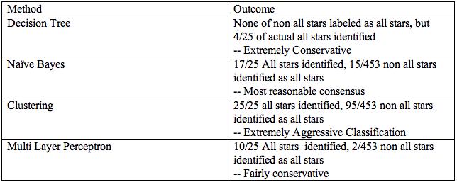

Problem
NBA All-Stars are not selected efficiently. Because All-Star selection has serious Economic implications, this is a problem worth solving.
The professional sports industry is a billion dollar industry. The majority of the revenue is a derivative of the iconic nature of star players. Star players most easily rise to prominence through all star selection. An inquiry into the economic implications of all star selections is out of the scope of this project, but would likely reveal that the stardom of players or lack thereof has enormous economic implications in the advertising, sales, and media industries across the nation.
Image 1: Lebron James fights Kevin Durant for the ball in the 2012 All-Star game.
With this in mind, we devised an algorithm to predict NBA all-star selections in a given season of professional basketball based off of statistics in the previous season. Besides the economic utility, this project is also interesting to casual fans and sports statistic enthusiasts.
Solution
The algorithm accesses the statistics from all-stars and non all-starts since the inception of the all-star era in the NBA (1951) from Basketball-reference.com. This information was used in conjunction with naïve Bayes nets to classify all-stars vs non all-stars. After significant trial and error, we found that naïve Bayes best classified the All-Stars, minimizing false positives while simultaneously verifying the majority of actual selections statistically.
Image 2: Example of 2011 top players by Win Share (WS) data table from basketball-reference.com
We used data from Basketball Reference (basketball-reference.com), a sabermetric sports statistic website. The site offered NBA player statistics in csv format. The data used statistical categories including:
Age, Team, Games, GS, Minutes played, FG, FGA, 2 PT, 2 PTA, 3 PT, 3PTA, FT, FTA, OFF REB, DEF REB, TOT REB, AST, STL, BLK, TO, PF, PTS, FG%, 2pt %, 3pt %, FT, WIN SHARES.
Table 1: Example Set of 8 Players Stats from 11-12 Classifications for 12-13
Results
We at first employed a decision tree with pruning to predict the all-stars. This approach resulted in highly encouraging projected results (90%+) but in reality were worse than chance at predicting all-stars. (10%+). In reaction to this setback, we attempted new methods. These methods included Naïve Bayes, Multilayer Perceptron, and Classification via clustering. The figure below gives an estimate of composite accuracy, because some models gave heavy amounts of false positives, while other models were extremely conservative in selection.
Image 3: 2012 All-Star Team with East Team on top and West Team on bottom.
Table 2: Different Machine Learning techniques used and brief synopsis of outcomes.
Image 4: Graphs of results from different machine learning techniques.
In the end we chose Naïve Bayes due to the fact that it was the best blend of Conservative and Aggressive classification approaches.
This classification suggests that, based on past selections, around half of players selected are not as statistically accomplished as past selections. This may mean that the statistical criteria for selection change fairly rapidly from year to year, or that statistics are not as crucial in the selection process as one might commonly believe.